Среды разработки веб-проектов
Веб-проект может быть пространством, музыкальным инструментом, игрой, исследованием или частью выставки. Браузер умеет показывать трёхмерные миры, обрабатывать звук, рисовать тысячи объектов и обмениваться данными с другими устройствами. Адресная строка при этом остаётся той же: зритель открывает ссылку и попадает в созданную вами среду.
Выразительность возникает из связи формы с действием. Можно рассказать о космической экспедиции через исследование лунной поверхности, представить портфолио как пространство или позволить посетителям вместе управлять изображением на фасаде. В каждом случае нужно решить, что человек сможет сделать и почему именно такое взаимодействие помогает раскрыть тему.
Пять проектов: разные способы организовать опыт
Рассматривайте примеры с двух сторон: что происходит на экране и что делает пользователь. Изображение может быть очень сложным, а действие простым. Или, наоборот, за лаконичным интерфейсом скрывается большая система состояний и связей. Технологический состав нельзя достоверно восстановить по одному внешнему виду. Ниже наблюдения о проектах отделены от предложений, как можно решить похожую задачу.
21 Hours on the Moon: история как исследование пространства

Проект превращает события экспедиции Apollo 11 в исследуемую среду. Лунный ландшафт связан с временной шкалой, отметками событий и материалами миссии. Вместо чтения длинной хронологии посетитель перемещается между точками и сам выбирает, где задержаться. Пространство помогает связать отдельные эпизоды.
Как устроено впечатление. Общий вид даёт ощущение места, приближение переводит внимание к событию, фотографии и записи возвращают к документальному материалу. Навигация связывает масштаб территории с масштабом человеческого действия.
Как подойти к похожей задаче. Сначала составить данные о событиях: время, координаты, название, описание, медиа. Затем связать выбор события с положением камеры и информационной карточкой. Ландшафт можно построить в 3D, а подписи и кнопки оставить обычными HTML-элементами. Это возможная учебная архитектура, а не утверждение о внутреннем устройстве данного сайта.
Для обсуждения. Что теряется, если оставить только хронологический список? Когда исследование пространства помогает понять материал, а когда задерживает доступ к нему?
THE LÄND: территория как интерфейс

Миниатюрный мир собирает здания, дороги и природные объекты в единую сцену. Разделы о жизни, работе и инновациях получают пространственный контекст. Такой подход помогает представить регион через целостный образ, который хочется рассматривать.
Что здесь важно для дизайнера. Отдельный объект должен быть одновременно частью композиции и понятной точкой внимания. В мире много деталей, поэтому интерфейсу нужны иерархия, читаемые подписи и доступный путь к разделам. Обычная навигация помогает тем, кому неудобно взаимодействовать со сценой.
Как собрать похожее. Подготовить упрощённый мир в Blender или непосредственно в визуальном 3D-редакторе, определить точки интереса, связать их с карточками и маршрутами камеры. Для небольшой сцены можно рассмотреть Spline, для более сложной логики Three.js, Babylon.js или PlayCanvas. Выбор зависит от поведения объектов, а не от желания использовать определённую библиотеку.
Для обсуждения. По каким признакам посетитель понимает, на что можно нажать? Можно ли найти нужную информацию, не исследуя весь мир?
Seasats: сложный продукт через демонстрацию

На сайте морские аппараты показаны в среде использования. Дальше появляются характеристики, сценарии применения и элементы изучения продукта, включая режим X-Ray и варианты полезной нагрузки. Изображение помогает связать абстрактные параметры с устройством конкретного объекта.
Как работает подача. Сначала посетитель понимает масштаб и характер продукта, затем переходит к устройству и сравнению. Визуальный слой и информационный слой выполняют разные задачи: один объясняет через показ, другой позволяет уточнить детали.
Как собрать похожее. Для управляемого осмотра можно использовать оптимизированную модель с отдельными деталями и состояниями материалов. Если нужен только заранее заданный пролёт камеры, иногда достаточно видео или последовательности изображений. Название X-Ray само по себе не доказывает наличие физически точной симуляции: подобное представление можно создать разными способами.
Для обсуждения. В каком месте интерактивная модель действительно объясняет устройство лучше фотографии? Какие характеристики всё равно удобнее представить таблицей?
K95: портфолио как пространственная композиция

Работы студии расположены в трёхмерной среде. Переключение Rings и Spiral меняет организацию галереи. Движение помогает показать характер студии ещё до открытия отдельного кейса.
Что можно разобрать. Карточка одновременно представляет работу и участвует в общем рисунке. При изменении структуры она должна сохранить связь со своим содержанием. Подписи, реакции на наведение и переход в проект помогают ориентироваться среди выразительных объектов.
Как собрать похожее. Данные о проектах отделить от представления. Для каждого проекта хранить изображение, название и ссылку; позиции вычислять по правилу кольца или спирали. При переключении режима плавно менять координаты и ориентацию. Так одна коллекция получает несколько пространственных представлений без ручного размещения каждой карточки.
Для обсуждения. Помогает ли эффект запомнить студию? Насколько быстро можно открыть конкретную работу с телефона и с клавиатуры?
Shopify Editions: большая редакционная система

Выпуск объединяет более 150 обновлений. Важна не только эффектная входная сцена, но и организация большого объёма информации: тематические разделы, карточки, демонстрации и переходы между ними. Пользователь может просматривать выпуск последовательно или идти сразу к своей области интересов.
Почему это полезный пример. Здесь выразительность должна сосуществовать с редакционной структурой. Если каждой карточке задать совершенно особую логику, поддерживать такой проект будет трудно. Повторяемые компоненты позволяют сохранять разнообразие внутри общей системы.
Как подойти к похожему проекту. Описать типы материалов и их поля, собрать библиотеку карточек, предусмотреть поиск или фильтрацию, отдельно разработать выразительный первый экран. Название Shopify не означает, что увиденную страницу можно получить выбором стандартной темы магазина: бренд, платформа электронной торговли и конкретная реализация промостраницы являются разными вещами.
Для обсуждения. Что удерживает большую страницу от превращения в бесконечную ленту? Какие анимации помогают понять структуру, а какие можно пропустить без потери смысла?
Из чего собирается веб-проект
Слова «среда разработки» часто используют сразу для нескольких вещей. VS Code, Spline, Three.js и браузер могут участвовать в одном проекте, хотя выполняют разные роли. Полезно понимать, где вы создаёте материал, где описываете поведение и где пользователь получает результат.
Например, интерактивный музейный объект может состоять из модели экспоната, базы пояснений, программы управления камерой и интерфейса на сенсорном экране. Модель создаётся в Blender, поведение пишется на JavaScript, изображение выводит браузер, а данные хранятся локально или на сервере. Ни один из этих инструментов не заменяет все остальные.
| Уровень | За что отвечает | Примеры |
|---|---|---|
| Редактор и рабочая среда | Создание файлов, отладка, организация проекта | VS Code, инструменты разработчика браузера, StackBlitz |
| Визуальный редактор | Сборка композиции, сцены или поведения через интерфейс | Webflow, Framer, Spline, редактор PlayCanvas |
| Язык и платформа | Описание структуры, внешнего вида и логики | HTML, CSS, JavaScript; TypeScript добавляет проверку типов |
| Библиотека | Решение определённого класса задач | Three.js для 3D, GSAP для анимации, D3 для визуализации данных |
| Фреймворк интерфейса | Компоненты, состояние и обновление интерфейса | React, Vue, Svelte |
| Движок | Организация сцены и многих связанных подсистем | Babylon.js, PlayCanvas; игровые проекты также создают в Unity и Godot |
| Сервер и хранение | Общие данные, учётные записи, синхронизация | Серверное приложение, база данных, CMS, файловое хранилище |
| Публикация | Доставка проекта пользователю | Статический хостинг, сервер, CDN, локальный компьютер выставки |
Что происходит после открытия ссылки
Браузер получает HTML, затем связанные стили, программу и материалы. Из них собирается страница. JavaScript реагирует на действия, меняет состояние и обновляет представление. Часть данных может приходить позже: например, описание выбранного экспоната или координаты другого участника.
Frontend работает со стороны пользователя: интерфейс, анимация, ввод, отображение сцены. Backend выполняет серверную часть: хранит общие результаты, проверяет запросы, управляет доступом. Для одиночного генеративного плаката серверная программа может вообще не понадобиться. Для общей комнаты, где несколько посетителей видят действия друг друга, нужен механизм синхронизации.
Не путайте опубликованный сайт с проектом редактора. Исходные модели, настройки сборки и файлы сцены нужны для дальнейшей работы, но браузер обычно получает подготовленные материалы. Опубликованная страница также не обязана обращаться в интернет при каждом действии: многое может вычисляться прямо на устройстве.
Как браузер рисует: от текста до 3D
HTML и CSS: интерфейс тоже может быть выразительным
HTML задаёт структуру документа: заголовки, ссылки, кнопки, поля, изображения. CSS управляет расположением, цветом, шрифтами, переходами и визуальными состояниями. Через эти инструменты можно создать сложную типографическую композицию, адаптивную сетку, маски, многослойный интерфейс и анимацию.
HTML-элемент существует как отдельный объект в структуре страницы, которую называют DOM. Это удобно для текста, управления и доступности. Нажатие кнопки можно обработать отдельно, ссылка имеет адрес, а заголовок сохраняет смысл даже при изменении оформления. Однако тысячи постоянно движущихся элементов могут оказаться неудачным способом нарисовать систему частиц.
Пример задачи. Веб-афиша меняет типографику при движении указателя, а при прокрутке собирается в расписание. Текст остаётся настоящим текстом, который можно выделить, увеличить и прочитать вспомогательными технологиями. Для такого проекта трёхмерный движок может быть не нужен.
SVG: графика из отдельных фигур
SVG описывает векторные формы, контуры и группы. Он подходит для схем, диаграмм, иконок и графических переходов. У отдельного контура можно менять толщину, цвет или форму, а группе назначать общую трансформацию. Вектор масштабируется без привязки к исходному разрешению изображения.
Это удобная среда для небольшого числа содержательных объектов. Например, в интерактивной карте посетитель выбирает область, и связанная диаграмма перестраивается. При очень большом числе деталей стоит сравнить SVG с Canvas: отсутствие пикселей в исходном описании не означает отсутствие вычислительной нагрузки.
Canvas 2D: рисование по кадрам
Canvas предоставляет поверхность, на которой программа рисует линии, изображения и текст. Содержимое не превращается автоматически в набор HTML-кнопок. Если нарисован круг, браузер сам не знает, что это интерактивный персонаж: проверку попадания указателя и описание действия нужно организовать в программе.
Зато Canvas удобен для рисования, частиц, следов, генеративных изображений и небольших игр. Каждый кадр можно очищать и рисовать заново, а можно сохранять следы предыдущих действий. p5.js делает такой подход доступным через понятные функции и примеры. PixiJS предлагает ускоренный рендеринг 2D-графики и работу с большими наборами спрайтов и эффектов.
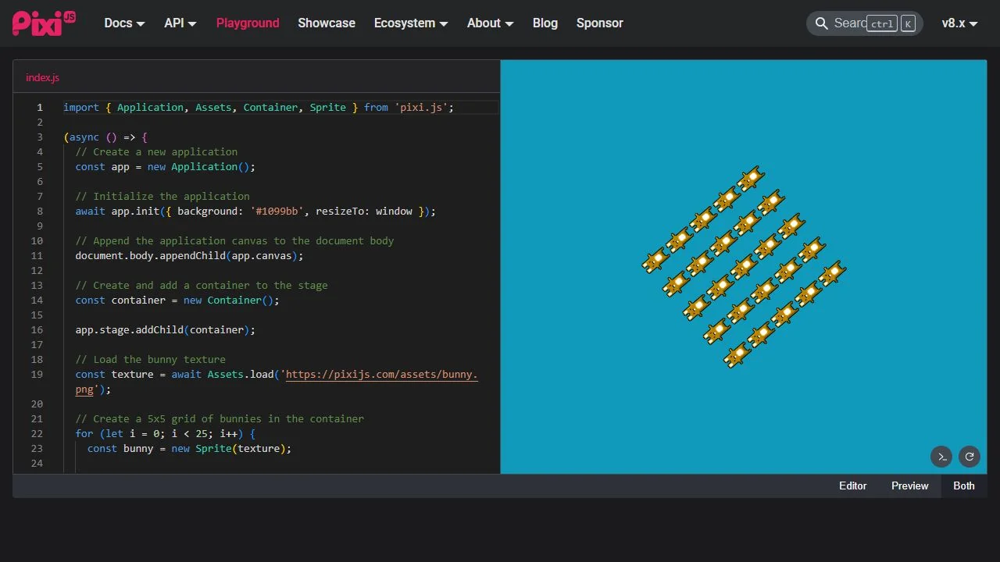
Смотреть в работе. Semantris, игра со словами, включена в официальный Showcase PixiJS. Здесь библиотека отвечает за графический слой; языковая модель и правила продукта являются другими частями системы.
WebGL и WebGPU: вычисления на видеокарте
WebGL позволяет использовать графический процессор для рисования в браузере. Это основа многих трёхмерных сцен, эффектов и ускоренных 2D-проектов. Обычно дизайнер работает не с низкоуровневыми командами напрямую, а через библиотеку или движок.
WebGPU предоставляет более современный графический и вычислительный интерфейс, в том числе для вычислительных шейдеров. Его поддержку нужно проверять на целевых устройствах. Слова WebGPU в описании проекта недостаточно, чтобы он автоматически работал быстрее: результат зависит от задачи, реализации и оборудования.
Шейдер представляет собой программу, которая выполняет часть графических вычислений на GPU. Например, вычисляет цвет поверхности, искажает изображение или определяет поведение множества частиц. В Shadertoy можно изучать работы, в которых сложные изображения строятся алгоритмически. Это среда экспериментов с шейдерами; интерфейс готового сайта и взаимодействие с данными обычно требуют отдельной работы.
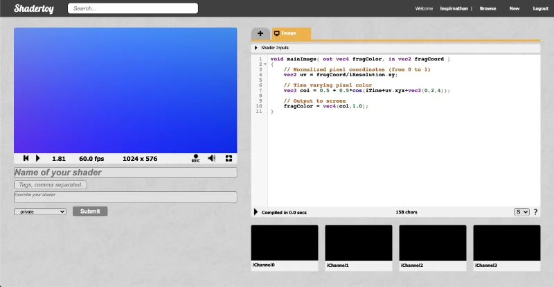
Смотреть в работе. В разборе Nathan показано, как входные текстуры становятся материалом шейдера. Это учебная работа с открытым кодом. На самом Shadertoy можно сравнить законченные графические эксперименты и их исходники.
Поворот объекта может быть настоящим перемещением камеры, прокруткой готовых кадров или деформацией плоской картинки. Выбирать способ стоит по доступным действиям пользователя, времени загрузки и требованиям к изображению.
Визуальные среды и конструкторы
Визуальная работа не ограничивается выбором шаблона. В ней тоже проектируют структуру, состояния и реакции. Различаются прежде всего доступная глубина управления и способ описать нестандартную логику.
Webflow, Framer и Tilda
Webflow позволяет визуально собирать веб-интерфейсы и анимационные взаимодействия; современная система Interactions использует GSAP. Здесь полезно понимать модель HTML и CSS: контейнеры, сетки, размеры, позиционирование и адаптивность. Сложную интерактивную сцену можно подключить отдельно, сохранив в Webflow редакционную часть и интерфейс.
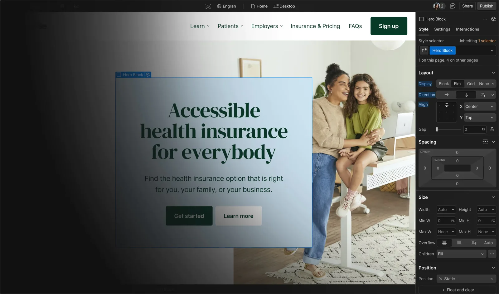
Смотреть в работе. Cotality показывает, как большая организация собирает общий сайт и редакционную систему. Использование Webflow описано в официальном кейсе. Обратите внимание на повторяемые страницы и работу с большим объёмом содержания.
Framer подходит для визуального проектирования и публикации сайтов с компонентами, состояниями и анимацией. Code Components позволяют добавлять собственные React-компоненты. Визуальный редактор сайта Framer и библиотека анимации Motion выполняют разные роли, даже если встречаются в одном рабочем процессе.
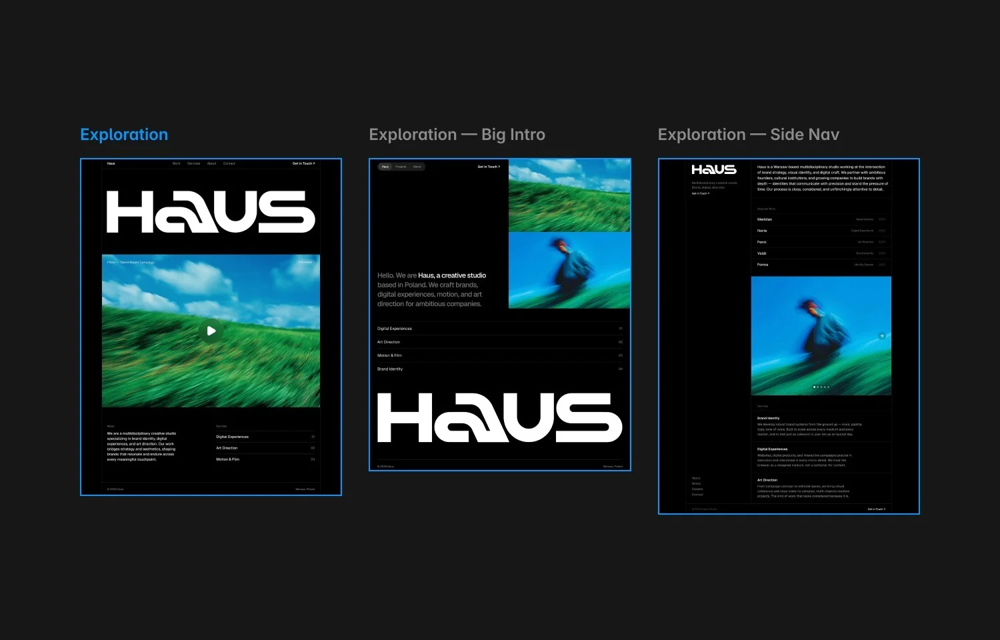
Смотреть в работе. Contra Labs Report и Inspired by Iceland представлены в официальной галерее Framer. Сравните, как устроены визуальный рассказ, типографика и переходы между разделами.
Tilda Zero Block даёт возможность собрать нестандартную композицию, настроить адаптивные варианты и анимацию. Это понятный путь для редакционного проекта или авторской страницы. Если в центре замысла находятся игровая логика, совместное взаимодействие или большая 3D-сцена, стоит отдельно спроектировать эти части и проверить возможность интеграции.
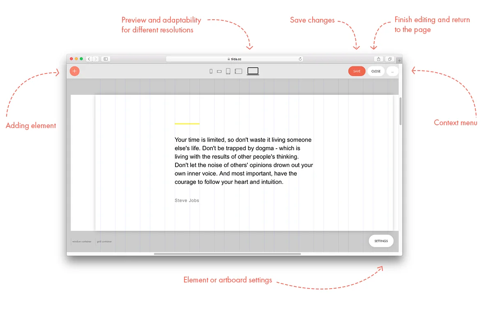
Смотреть в работе. В Made on Tilda собраны готовые сайты. Ещё один источник с подтверждением от авторов: портфолио студии «Имя.». Сравните разные редакционные структуры, сохраняя внимание к читаемости и мобильной версии.
Что проверить до выбора. Можно ли управлять нужными состояниями? Как подключаются собственный код и внешние материалы? Что происходит с проектом при смене тарифа или платформы? Можно ли передать его другому автору? Проверять нужно конкретную функцию и условия публикации: возможности визуальных сред меняются.
Spline: интерактивная трёхмерная сцена
Spline позволяет работать с 3D в браузере: формой, материалами, светом, состояниями и событиями. Например, по нажатию объект может менять положение и материал, а движение указателя влиять на композицию. Сцену можно встроить в веб-проект, а Code API связывает её с внешней логикой.
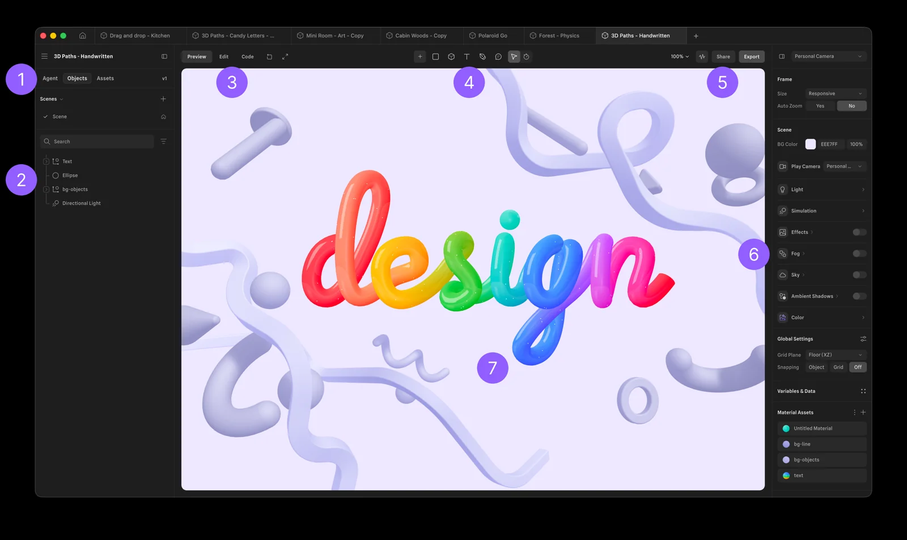
Смотреть в работе. Resend использует Spline для 3D-визуалов бренда. Это подтверждено в подборке клиентов Spline. Рассматривайте роль трёхмерных объектов внутри сайта: Spline отвечает за визуальный слой, а весь продукт состоит из нескольких технологий.
Это подходящий способ быстро проверить пространственную идею: интерактивный первый экран, небольшой объект, сцену с несколькими состояниями. Но встроенная сцена остаётся частью общего продукта. Текст, навигация, загрузка, мобильный вариант и доступное управление требуют внимания и за пределами редактора.
Пример. Посетитель выбирает тему конференции, и несколько объектов перестраиваются в соответствующий знак. В Spline можно собрать сцену и её состояния, а список тем и описание докладов оставить в HTML. Выбор связывает обе части через общий идентификатор темы.
Rive и Lottie: графика с заранее подготовленным поведением
Rive объединяет создание анимации с интерактивным поведением и исполнением в приложении. Машина состояний помогает описать переходы: персонаж ждёт, реагирует на наведение, подтверждает успешное действие. Такой объект может быть частью интерфейса, игры или образовательного проекта.
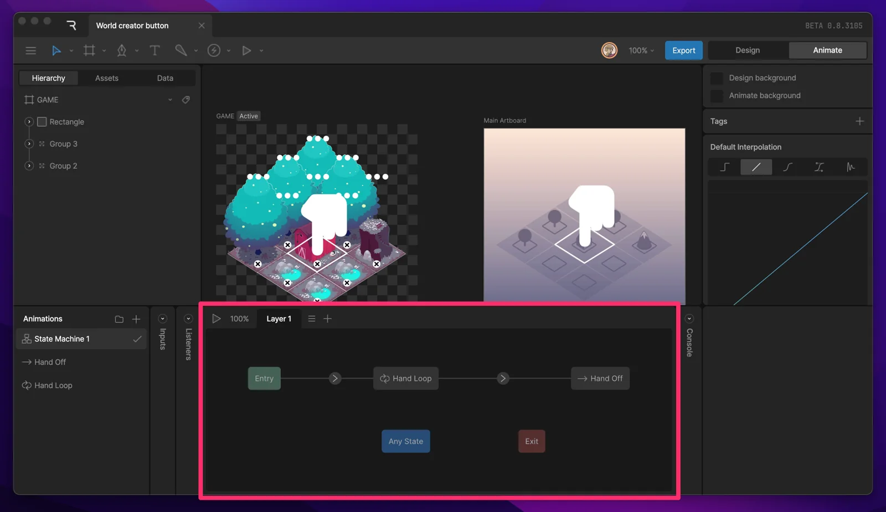
Смотреть в работе. Duolingo использует Rive для анимации персонажей, в том числе в Video Call with Lily. Rive описывает это применение. Здесь интересны переходы между ожиданием, слушанием и ответом. Это пример продукта для мобильных устройств, который показывает возможности той же системы анимации.
Lottie используют для воспроизведения поддерживаемых анимаций, в том числе подготовленных через соответствующий экспорт из After Effects. Не всякий эффект AE автоматически переносится в такой формат. Проверять совместимость нужно на реальном экспортированном файле и выбранном проигрывателе.
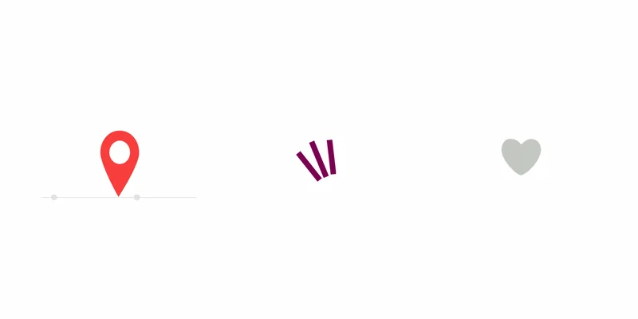
Смотреть в работе. В репозитории lottie-web есть демонстрации и примеры воспроизведения. Это примеры анимационного слоя, а не самостоятельный редактор сайта. Сравните изменение формы значка и переход интерфейса, который запускает приложение.
Граница выбора проходит по задаче. Для небольшой воспроизводимой анимации может хватить Lottie. Для персонажа с управляемыми состояниями стоит рассмотреть Rive. Для свободного осмотра модели с освещением и пространственными объектами нужна трёхмерная сцена.
Работа с кодом и анимацией
Редактор, браузер и сборка
В рабочей среде с кодом вы управляете файлами и связями между ними напрямую. Редактор помогает находить ошибки и переходить к нужной функции. Инструменты разработчика браузера показывают структуру страницы, сетевые запросы, ошибки и нагрузку. Это возможность увидеть причину поведения, а не только наблюдать результат.
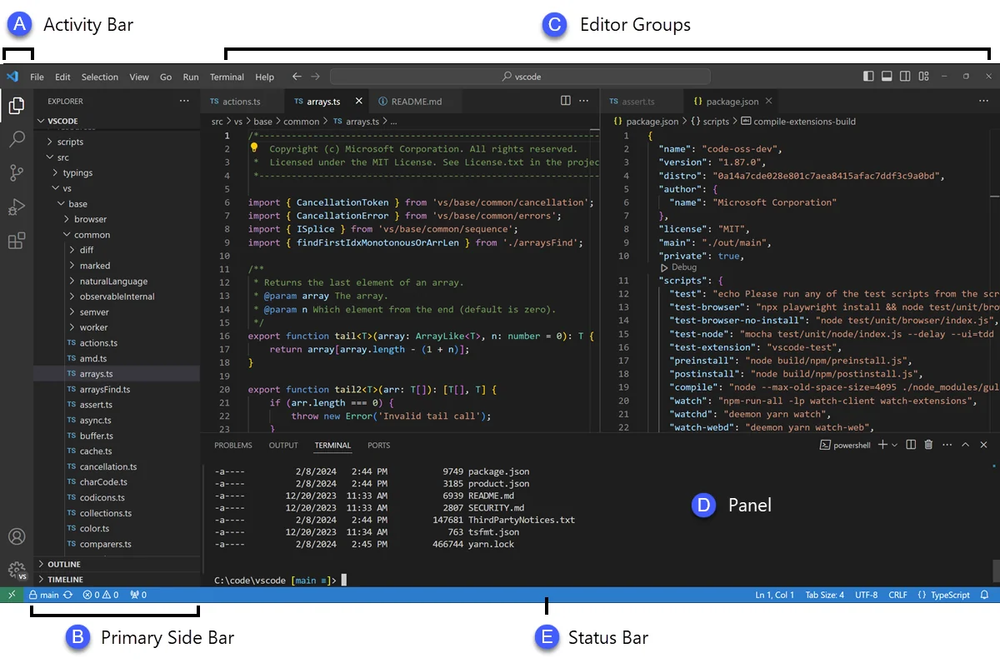
Vite запускает сервер для разработки и подготавливает проект к публикации. Он не рисует объекты и не задаёт художественный стиль. Node.js может обеспечивать работу инструментов сборки или серверной программы; это не обязательная зависимость каждой анимации, которая исполняется в браузере.
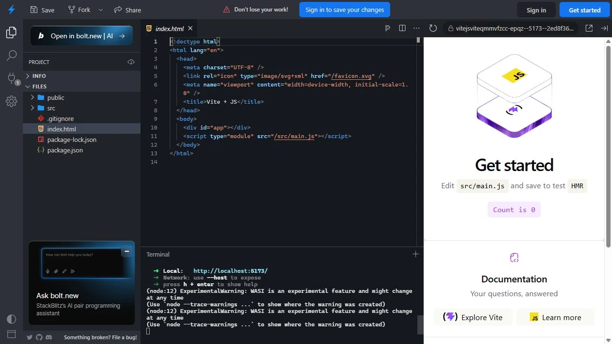
Смотреть в работе. Стартовый проект Vite можно открыть без локальной установки. Измените текст в файле и проследите обновление результата. Здесь StackBlitz является рабочей средой, Vite инструментом разработки, а изображение справа результатом работы браузера.
Для первых опытов можно использовать редактор p5.js, CodePen или StackBlitz. Они сокращают путь от идеи до работающего примера. По мере роста проекта становятся важнее структура папок, контроль версий, понятные зависимости и возможность воспроизвести сборку.
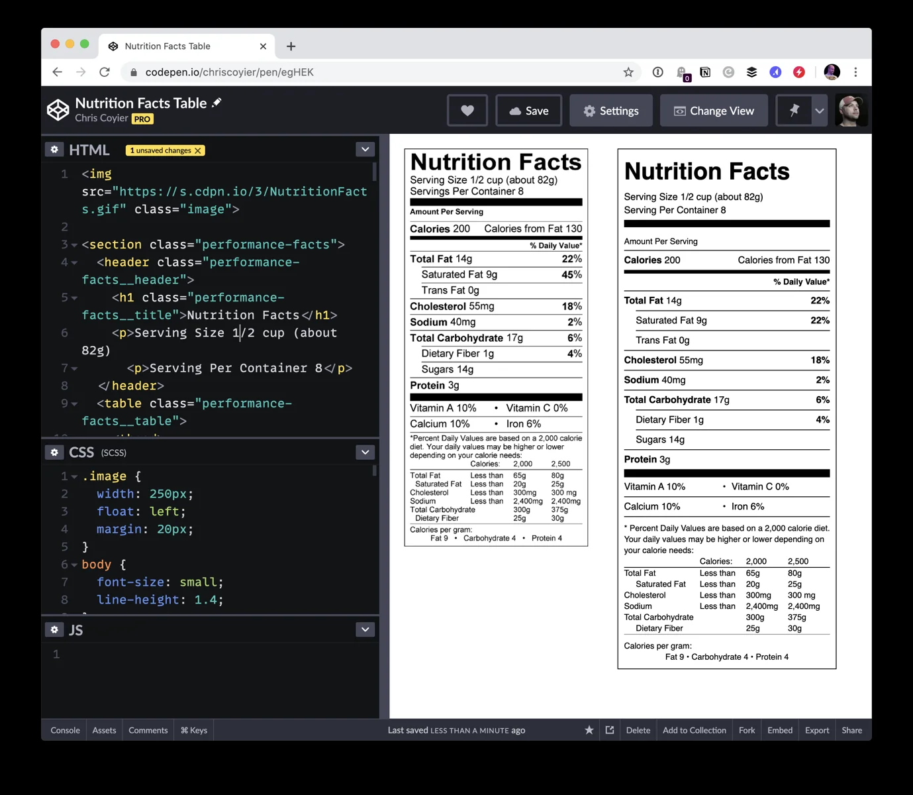
Смотреть в работе. Официальные примеры GreenSock на CodePen позволяют изучать GSAP небольшими фрагментами. У CodePen нет единственного визуального стиля: результат определяется кодом автора.
Компоненты и состояние
React, Vue и Svelte помогают организовать интерфейс из повторяемых компонентов. Например, карточка экспоната получает название, изображение и признак выбора. Когда состояние меняется, обновляется соответствующее представление. Это особенно удобно для каталогов, редакционных систем, конфигураторов и сложных панелей управления.
Сам по себе React не создаёт трёхмерное изображение. Его можно соединить с графической библиотекой. Так же и Three.js не заменяет автоматически систему навигации, авторизации или редактирования контента. Инструменты закрывают разные задачи и часто работают вместе.
Для проекта с большим количеством страниц дополнительно рассматривают фреймворки уровня сайта: например, Next.js, Nuxt, SvelteKit или Astro. Они помогают организовать маршруты, загрузку данных и подготовку страниц. Выбор такого инструмента имеет смысл после понимания структуры продукта; для одиночного визуального эксперимента он может оказаться избыточным.
GSAP и Motion: управлять изменением во времени
GSAP позволяет создавать последовательности и управлять числовыми свойствами объектов. В одной временной шкале могут участвовать буквы заголовка, положение HTML-блока и координаты камеры. ScrollTrigger связывает анимацию с прокруткой.
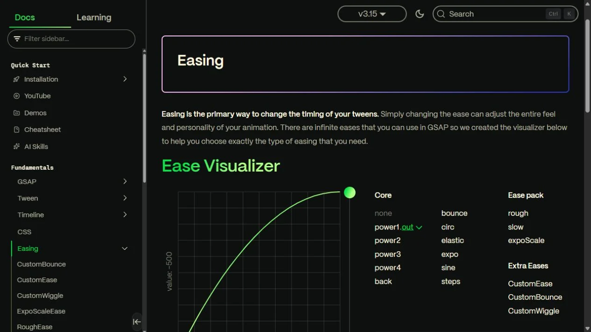
Смотреть в работе. GSAP Showcase собирает готовые сайты. Для разбора самого механизма откройте Ease Visualizer: меняя кривую, можно увидеть разницу между одинаковыми по длительности движениями.
Motion предлагает инструменты для анимации интерфейсов, переходов между состояниями и реакций на жесты. Он удобен, когда движение тесно связано с жизнью компонентов: карточка раскрывается, список перестраивается, элемент появляется после действия.
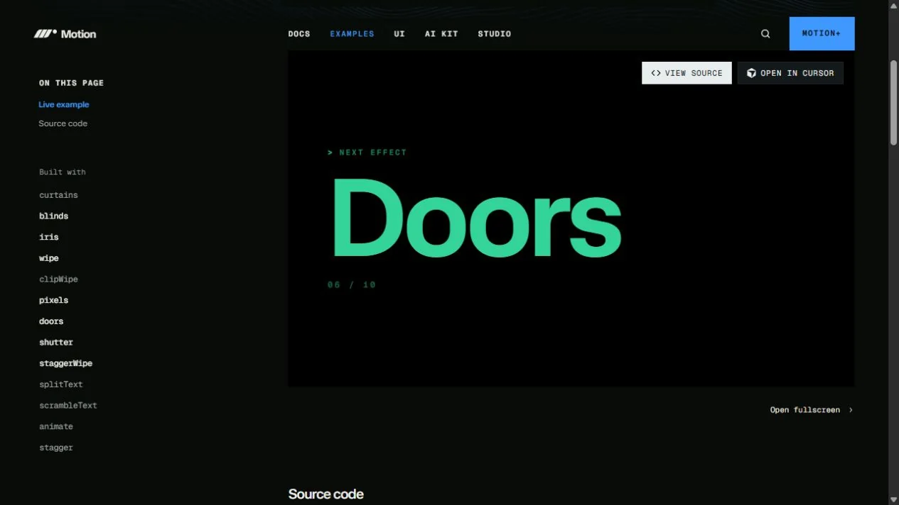
Смотреть в работе. Curtains: Showcase показывает несколько способов смены страницы. Это демонстрация Motion+, а не отдельный коммерческий сайт; часть исходников доступна в рамках платного продукта. Смотрите, как переход скрывает смену содержания и сохраняет непрерывность движения.
Три разных связи с действием. Анимация может запускаться по событию и затем идти сама; её прогресс может напрямую зависеть от прокрутки; либо она может постоянно стремиться к новому значению с инерцией. Внешне все три варианта могут выглядеть плавно, но ощущение контроля будет разным.
Не стоит одновременно отдавать одну и ту же координату двум системам управления. Если движок камеры, GSAP и обработчик указателя независимо записывают её положение, возникают скачки и борьба значений. Лучше определить основное состояние, а дополнительные воздействия складывать в понятном порядке.
p5.js: от правила к изображению
В генеративном проекте форма определяется правилами. Посетитель может менять плотность, направление, цвет или источник данных, а изображение будет перестраиваться. Так появляются живые плакаты, графические инструменты и интерактивные учебные модели.
Небольшой пример для редактора p5.js: круги меняют размер в зависимости от расстояния до указателя. Здесь нет готового видеоролика; программа заново рассчитывает изображение.
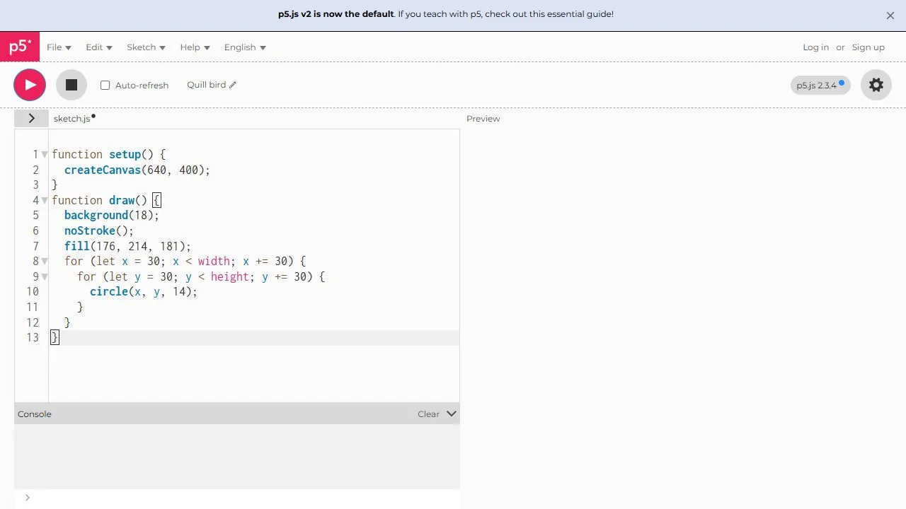
Смотреть в работе. В Generative Typography Showcase собраны студенческие работы и инструменты формообразования на p5.js. Изучайте, как правило превращает букву в систему и какие параметры переданы зрителю.
function setup() {
createCanvas(640, 360);
noStroke();
}
function draw() {
background(18);
for (let y = 30; y < height; y += 30) {
for (let x = 30; x < width; x += 30) {
const distance = dist(mouseX, mouseY, x, y);
const size = map(distance, 0, 240, 26, 4, true);
fill(176, 214, 181);
circle(x, y, size);
}
}
}setup() создаёт холст один раз. draw() обновляет изображение. Два цикла перебирают сетку точек, dist() измеряет расстояние, map() переводит его в размер. Простое правило даёт согласованное поведение множества объектов. Такой же принцип можно применить к яркости, вращению или высоте элементов в 3D.
Полноценное 3D и игровые движки
Что считать полноценной трёхмерной сценой
В трёхмерной сцене существуют объекты с геометрией, материалами и положением в пространстве. Камера определяет, как они видны. Освещение и способ расчёта изображения влияют на поверхность. Посетитель может менять точку наблюдения, выбирать объекты или воздействовать на их состояние, если автор предусмотрел эти действия.
Реальное время не означает обязательный фотореализм. Простая стилизованная сцена может лучше поддерживать идею и работать на большем числе устройств. И наоборот, очень детальный рендер не делает опыт интерактивным, если зритель может только смотреть заранее подготовленное видео.
| Способ | Что можно менять | Когда подходит |
|---|---|---|
| Видео | Воспроизведение, паузу, иногда позицию во времени | Заданный автором пролёт, сложное освещение, точный монтаж |
| Последовательность кадров | Выбор подготовленного изображения, например по прокрутке | Контролируемый ракурс и ограниченная последовательность |
| Плоское изображение с картой глубины | Небольшое смещение и деформацию, создающие параллакс | Ощущение объёма при ограниченном движении |
| 3D в браузере | Камеру, объекты, материалы и предусмотренную логику | Осмотр, конфигуратор, пространственная навигация, игра |
| Поток с удалённого приложения | Действия в программе, исполняемой на сервере | Когда нужен конкретный тяжёлый движок и допустимы серверные расходы |
Three.js: собрать собственную сцену
Three.js предоставляет инструменты для работы с трёхмерной графикой в вебе. Через код можно создавать сцену, камеры, материалы, освещение, загружать модели и организовывать обновление изображения. В официальных примерах видны разные направления: от моделей и материалов до постобработки и взаимодействия.
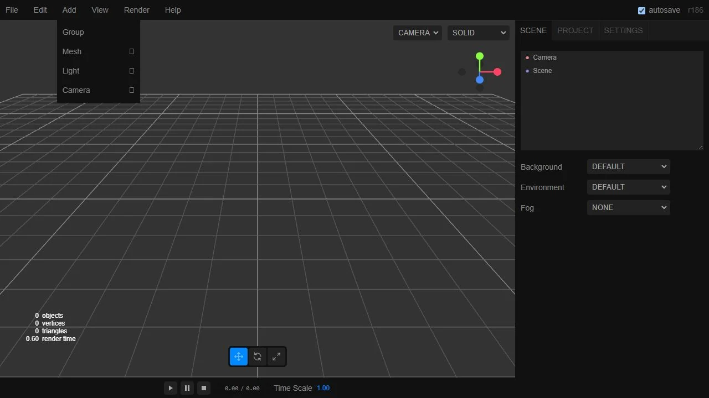
Смотреть в работе. Портфолио Bruno Simon превращает просмотр в игровое перемещение. Для изучения исходной архитектуры есть открытый проект версии 2019 года на Three.js. Он объясняет подход, но не является исходным кодом любой последующей версии сайта.
Three.js подходит, когда нужен большой контроль над визуальным результатом. Но правила игры, переходы между экранами, загрузка данных и пользовательский интерфейс не появляются автоматически. Например, физику столкновений часто добавляют отдельным инструментом, а структуру приложения организуют самостоятельно.
React Three Fiber позволяет описывать Three.js-сцену через React-компоненты. Это удобно для проекта, где интерфейс и трёхмерные объекты используют общее состояние. Он не отменяет знания пространства, камеры, материалов и света: меняется организация кода, а не основные принципы 3D.
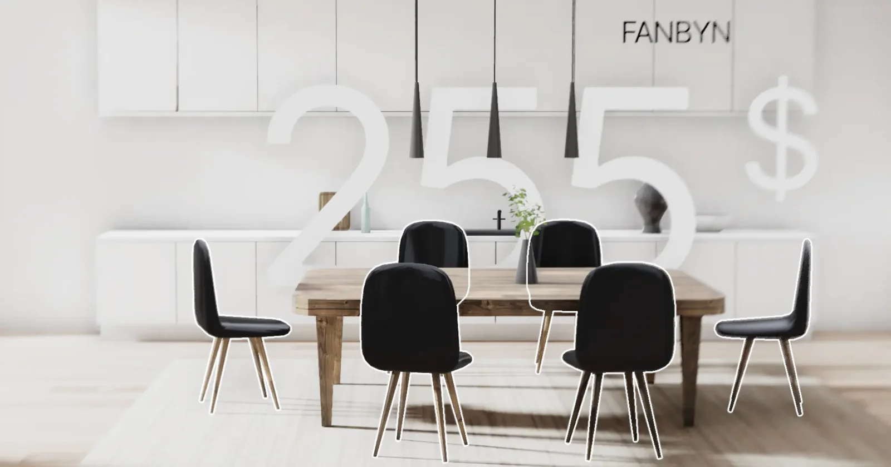
Смотреть в работе. Shopping и T-shirt Configurator опубликованы в официальной коллекции. Это демо, на которых можно разобрать связь выбора в интерфейсе и состояния 3D-объекта.
Пример. В конфигураторе пользователь выбирает цвет корпуса. Интерфейс обновляет значение selectedColor, а материал нужной части модели получает этот цвет. Следующий шаг может менять комплект деталей, освещение или подпись. Даже сложный продукт строится из таких понятных связей.
Babylon.js и PlayCanvas: более цельная система
Babylon.js предлагает движок для интерактивного 3D с инструментами сцены и отладки. Он подходит для приложений, в которых существенную роль играют камера, материалы, анимация и поведение объектов. Встроенные возможности и экосистему стоит сопоставлять с требованиями конкретного проекта, а не выбирать движок по одному эффектному демо.
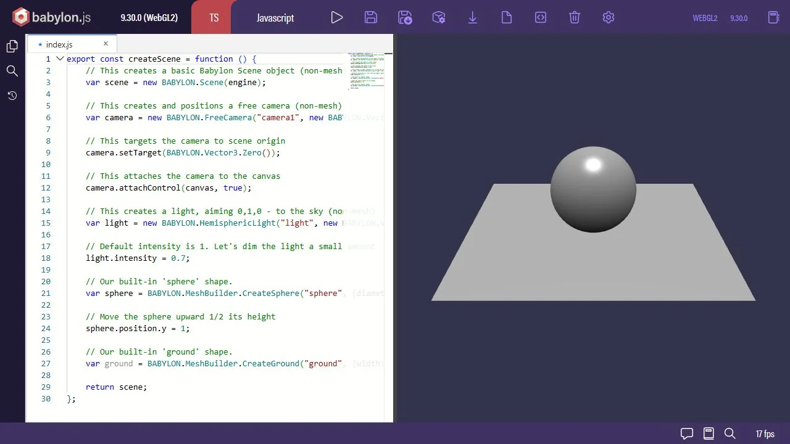
Смотреть в работе. Product Page Demo показывает интерактивную демонстрацию товара. Это официальный пример движка: изучайте камеру, материалы и переходы между состояниями, не принимая его за действующий магазин.
PlayCanvas сочетает веб-движок с редактором сцен. Визуальное размещение объектов можно соединять с программированием поведения. Такой рабочий процесс близок к игровым движкам и удобен команде, где сценой и логикой занимаются разные люди.
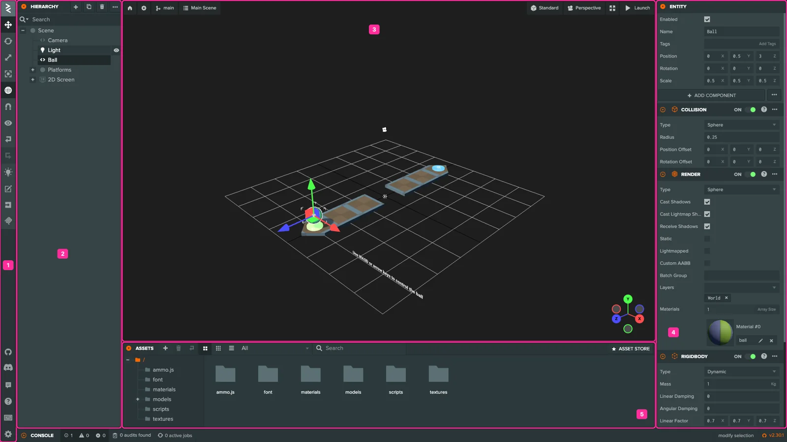
Смотреть в работе. Robostorm является многопользовательской браузерной игрой из официальной подборки PlayCanvas. Она показывает, как сцена, управление, звук и сетевой обмен собираются в один игровой продукт.
Если в проекте много объектов, состояний и правил, редактор помогает ориентироваться в структуре. Если нужна необычная графическая техника и очень точное управление, важнее проверить доступ к рендерингу и расширению материалов. Универсального победителя здесь нет.
Unity, Godot и Unreal Engine: разные пути в браузер
Unity и Godot позволяют подготавливать проекты для веба. Это полезно, если в центре находится игровой процесс: персонаж, столкновения, уровни, правила и система состояний. Нужно заранее проверить ограничения веб-экспорта, используемых расширений и целевых устройств. Проект, который работает в редакторе, ещё не проверен в браузере.

Смотреть в работе. Monument Valley 3 представлен Unity как пример мобильной игры. Смотрите, как композиция и пространственная логика определяют действие. Это пример возможностей движка; из него не следует, что данная игра опубликована для браузера.

Смотреть в работе. The Case of the Golden Idol создана на Godot и представлена в официальной галерее. Обратите внимание на сцену как носитель улик и на интерфейс формулирования вывода. Это пример движка, а не обещание доступности конкретного релиза в вебе.
Для небольшого 2D-проекта можно рассмотреть Phaser, веб-движок для игр. PixiJS, в свою очередь, прежде всего решает задачи рендеринга 2D: игровую структуру и правила при необходимости организуют отдельно.
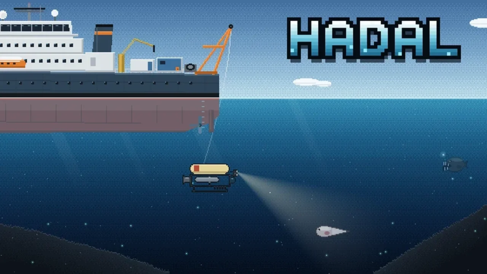
Смотреть в работе. HADAL описана разработчиками Phaser как игра об исследовании глубин на Phaser 4. Это готовая браузерная работа: можно обсуждать управление, темп и использование двухмерной графики.
В случае Unreal Engine Pixel Streaming приложение исполняется на удалённом компьютере, а браузер получает видеопоток и передаёт ввод. Это другой принцип, чем отрисовка всей сцены на устройстве посетителя. Он требует инфраструктуры, хорошей связи и расчёта числа одновременных пользователей. Задержка сети становится частью ощущения от взаимодействия.

Смотреть в работе. В материалах Pixel Streaming показан путь передачи приложения в браузер. При разборе отделяйте работу Unreal-проекта на сервере от интерфейса, который получает посетитель.
Сравнение на одной задаче. Для небольшой модели мебели может хватить веб-просмотрщика. Для игрового шоурума с персонажем нужен движок и игровая логика. Для демонстрации уже существующего тяжёлого Unreal-приложения иногда рассматривают потоковую передачу. Во всех трёх случаях зритель открывает браузер, но ресурсы и организация проекта различаются.
Blender и подготовка модели для веба
Blender создаёт исходные модели, а веб-инструмент отвечает за их использование в проекте. Для передачи сцен часто применяют glTF и его бинарный вариант GLB. Важно проверять результат экспорта: материалы и эффекты исходного редактора не обязаны переноситься с полным визуальным совпадением.
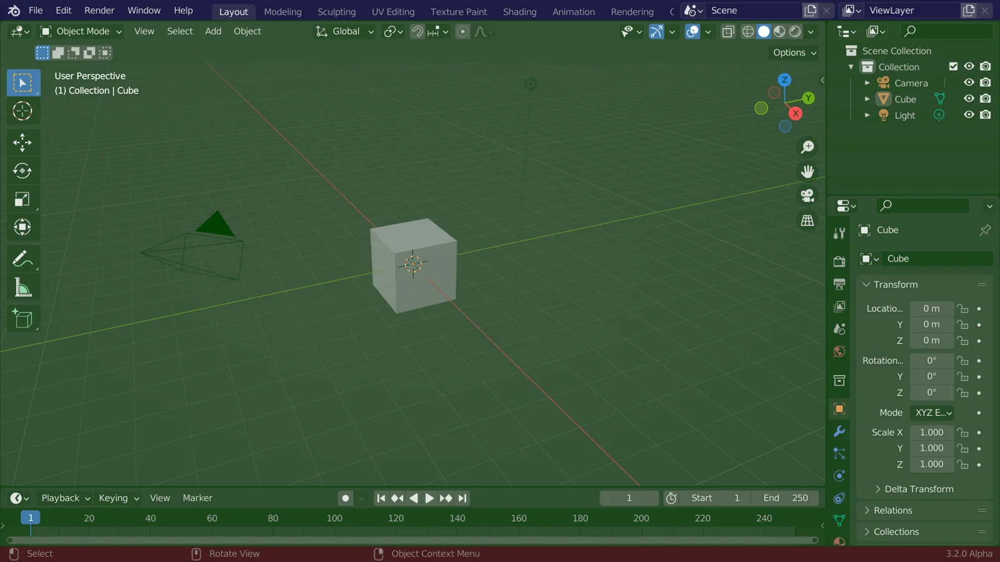
Подготовка включает упрощение геометрии, выбор размеров текстур, проверку масштаба и ориентации, понятное разделение частей модели. Запечённые детали и освещение иногда помогают снизить нагрузку. Но запечённая тень не будет автоматически соответствовать свободно перемещённому источнику света: оптимизация связана с допустимым поведением сцены.
Для простого осмотра модели есть <model-viewer>. Он позволяет встроить интерактивный просмотр 3D и поддерживаемые AR-сценарии без самостоятельного построения всего движка. В редакторе можно проверить свою модель и подготовить начальную настройку. Для полноценного игрового мира такой просмотрщик не заменяет систему сцены и поведения.
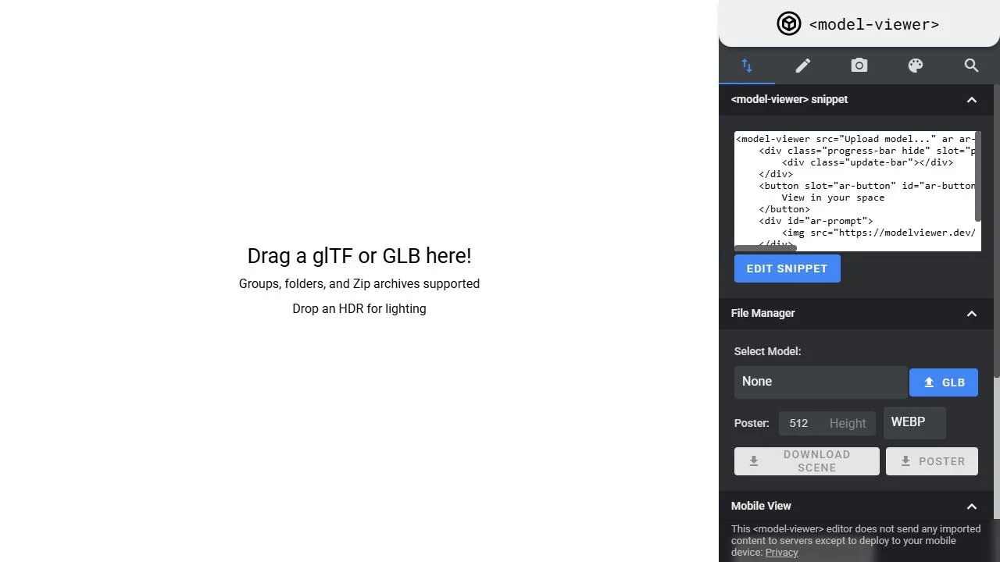
: панель модели и HTML-настройки" width="1280" height="720" loading="lazy">Смотреть в работе. В официальной коллекции есть осмотр моделей, подписи, анимация и поддерживаемые AR-сценарии. Сравните свободное вращение объекта и переход в режим дополненной реальности: это разные способы показа одного материала.
Примеры для исследования. В портфолио Bruno Simon просмотр работ становится перемещением по игровому пространству. В NASA Eyes трёхмерное представление помогает исследовать космические объекты и миссии. Сравните, как в первом случае пространство формирует авторский образ, а во втором помогает работать с информацией.
Звук, данные, камера и совместное действие
Веб как музыкальный инструмент
Web Audio API позволяет строить цепочки источников, обработки и вывода звука. Можно синтезировать сигнал, управлять громкостью и фильтрами, анализировать поступающее аудио. Библиотеки вроде Tone.js помогают организовать музыкальное время и звуковые события.
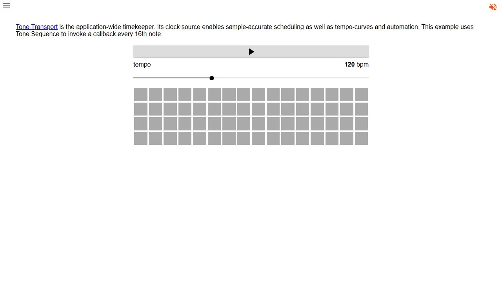
Смотреть в работе. Learning Music от Ableton включён в галерею Tone.js. Ноты и ритм становятся объектами взаимодействия. Это пример образовательного веб-продукта со звуком, а не только проигрывателя аудиофайлов.
У звука своя логика времени. Если ноты должны идти ровно, недостаточно запускать их только по моменту обновления картинки: графические кадры могут задерживаться. Музыкальные события планируют в звуковой временной системе, а изображение связывают с ней.
В Chrome Music Lab музыкальные принципы становятся предметом действия: можно менять рисунок и сразу слышать результат. Shared Piano добавляет совместность. Это полезный пример для курса: интерактивность здесь помогает исследовать закономерность, а не просто украшает страницу.
Запуск звука обычно требует действия пользователя из-за правил браузера. Поэтому кнопка начала может одновременно вводить человека в проект и разрешать воспроизведение. Нужно также предусмотреть отключение звука: проект может открыться в аудитории, транспорте или на выставке с общей акустикой.
Данные как материал композиции
У проекта могут меняться не только цвета и ракурсы, но и сами данные. Визуализация превращает числа и связи в форму, с которой можно взаимодействовать. Посетитель меняет фильтр, масштаб или период и видит другой аспект материала.
D3 помогает связывать данные с представлением: шкалами, геометрией и обновлением элементов. Для географических интерфейсов можно рассматривать MapLibre. Но карта не обязана быть буквальной: данные могут управлять звуком, плотностью частиц или поведением виртуального пространства.
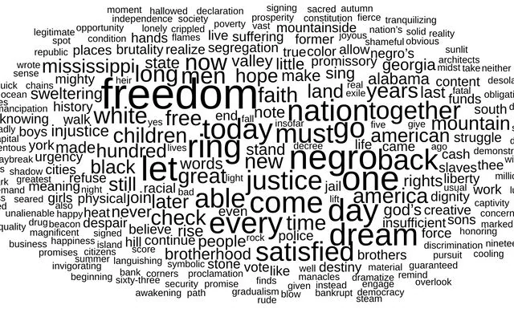
Смотреть в работе. Галерея D3 содержит законченные визуализации с исходниками. Сопоставьте диаграммы связей, карты и временные ряды: один инструмент поддерживает разные способы объяснять данные.
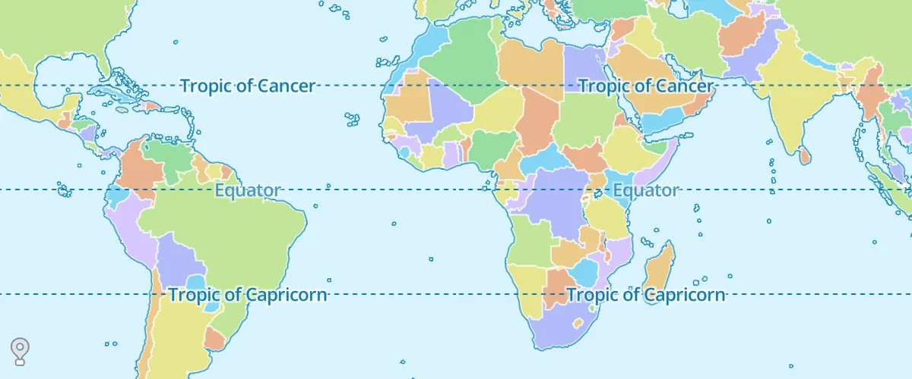
Важно различать декоративную реакцию и содержательную связь. Если увеличение числа всегда делает объект краснее, зритель должен понимать, что именно увеличивается и что означает цвет. Без легенды, масштаба и источника эффект может создавать ложное впечатление точности.
The Evolution of Trust показывает ещё один путь: интерактивная модель объясняет идею через последовательность решений. Посетитель сначала действует, затем наблюдает последствия и сравнивает стратегии. Для образовательного веба такая структура часто полезнее длинного вступительного текста.
Камера, движение и физическое присутствие
Камера может быть источником изображения или данных о движении. Например, MediaPipe Pose Landmarker предоставляет инструменты для оценки положения тела в веб-приложении. Полученные координаты можно связать с графикой: расстояние между руками меняет размер формы, наклон тела влияет на направление.
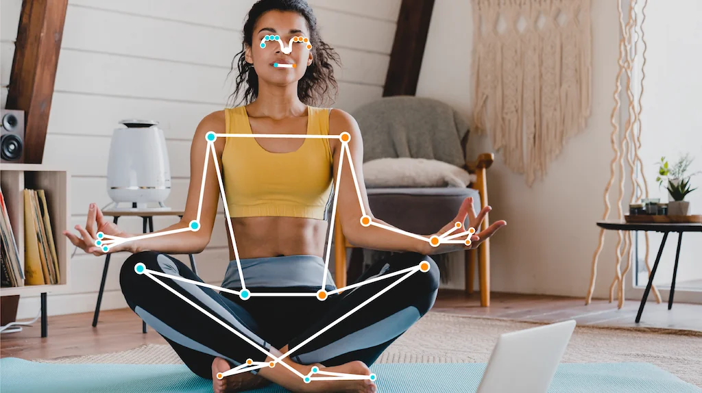
Смотреть в работе. В официальном веб-примере можно изучить получение координат позы. Это компонент будущего продукта: связь жеста с графикой, сценарий и обратную связь проектирует автор.
Сначала нужно определить, какие данные действительно нужны. Для реакции на силуэт не всегда требуется узнавать человека. Для управления жестом не всегда требуется записывать видео. Разрешение камеры, условия света, задержка и потеря отслеживания становятся частью проектирования взаимодействия.
Обработка может выполняться на устройстве, но это зависит от конкретной реализации. Нельзя обещать отсутствие передачи данных только потому, что интерфейс открыт в браузере. В проекте следует ясно обозначить, используется ли запись и куда уходят материалы.
Несколько участников: общее состояние
Если два посетителя двигают одну форму, их браузерам нужно договориться о её состоянии. Сервер может принимать сообщения и рассылать обновления. WebSocket поддерживает двусторонний обмен в рамках открытого соединения и подходит для многих таких систем.
Нужно решить, кто имеет право изменять объект, как обрабатываются одновременные действия и что происходит при разрыве связи. Передавать координаты каждого пикселя обычно не требуется: часто достаточно события «начал рисовать», положения указателя и идентификатора участника.
В Paper Planes локальное действие с бумажным самолётом включено в общий мир. Обсудите, как простая метафора помогает почувствовать присутствие других людей. Сетевой проект интересен не количеством подключений само по себе, а тем, какие отношения между участниками он создаёт.
Веб-проект в физическом пространстве
Веб-технологии используют и для инсталляций. Браузер может работать на сенсорном киоске, выводить генеративную графику на проектор, управлять выставочным экраном или превращать телефоны посетителей в контроллеры. Интернет-сайт и пространственная работа могут иметь общую программную основу, но разные способы показа и взаимодействия.
Например, один и тот же алгоритм частиц можно открыть дома по ссылке, вывести на большой экран или связать с датчиком расстояния. Меняются вход, масштаб изображения и сценарий присутствия человека. Среда разработки сама по себе не определяет конечный носитель.
| Формат | Что делает браузер | Что нужно продумать |
|---|---|---|
| Сенсорный киоск | Показывает интерфейс, модель или архив | Крупные области нажатия, возврат к началу, доступность по высоте |
| Генеративная проекция | Рисует изображение в реальном времени | Разрешение, яркость, геометрию поверхности и стабильную частоту кадров |
| Телефон как контроллер | Передаёт жесты и выбор на общий экран | Вход по ссылке или QR-коду, локальную сеть, число участников |
| Интерактивное зеркало | Получает изображение или координаты движения | Свет, расстояние до камеры, задержку и потерю отслеживания |
| Панель оператора | Управляет внешней медиасистемой | Состояния подключения, понятную обратную связь и восстановление |
| Распределённая работа | Связывает несколько экранов и участников | Синхронизацию, роли устройств и поведение при отключении одного из них |
Реальный пример: Unnumbered Sparks
Unnumbered Sparks, совместная работа Aaron Koblin и Janet Echelman, была представлена на TED в 2014 году. Посетители управляли визуальной композицией на большой подвесной скульптуре через мобильные устройства. Маленький личный экран становился входом в общее пространственное произведение.
На странице автора есть материалы о создании и технологии проекта. Это пример, который полезно рассматривать по ролям: телефон получает действие, система передаёт его, изображение становится общим, а физическая форма меняет восприятие графики. Важно не переносить технические решения этой конкретной работы автоматически на любой выставочный проект.
Для обсуждения. Как посетитель узнаёт, что именно его действие видно на большой поверхности? Что происходит, когда участников много? Может ли человек, который не достал телефон, всё равно получить полноценный опыт?
Браузер, TouchDesigner и внешние устройства
В смешанной системе браузер может отвечать за интерфейс, а TouchDesigner за обработку видео, вывод изображения или связь с оборудованием. Web Server DAT поддерживает HTTP и WebSocket. Это позволяет, например, открыть панель управления на планшете и передавать параметры в TouchDesigner.
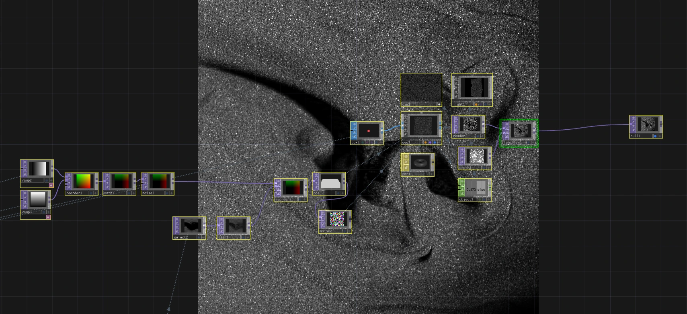
Это один из возможных вариантов. Если изображение полностью рассчитывается в веб-приложении, TouchDesigner может не понадобиться. Если основная графика построена в TouchDesigner, браузер может быть только пультом. Соединять две среды стоит ради конкретной задачи, а не ради увеличения числа инструментов.
Обычная веб-страница не получает произвольный доступ ко всем протоколам и устройствам компьютера. Для OSC по UDP или специального оборудования часто нужен посредник: локальная программа, сервер или TouchDesigner. Поддержка Web MIDI и Web Serial зависит от браузера и условий доступа; её проверяют на целевой системе. Наличие USB-разъёма ещё не означает, что устройство сразу доступно из страницы.
Инсталляции нужен сценарий работы без автора
На выставке важен не только красивый момент взаимодействия. Человек может уйти в середине, сеть может пропасть, а компьютер должен включиться утром без участия разработчика. Поэтому проектируют ожидание, приглашение, активное действие и возвращение к исходному состоянию.
В локальной установке можно хранить необходимые материалы рядом с программой и работать без внешнего интернета. Для связи телефонов с общим экраном при этом всё равно нужна организованная сеть. Локальная сеть, интернет и локальный сервер являются разными понятиями.
Проверка должна включать длительную работу, повторные подключения, перезапуск, отсутствие посетителей и несколько человек одновременно. Для запуска как отдельного приложения можно рассмотреть оболочки вроде Electron или Tauri, но они не отменяют требования к устойчивости и настройке оборудования. Проекционное совмещение с неровной поверхностью тоже является отдельной задачей: fullscreen-страница сама по себе не делает мэппинг.
Путь от идеи до работающей системы
Сначала действие, затем технология
Полезно сформулировать проект одним предложением через действие: «посетитель собирает общий звуковой рисунок», «исследует устройство объекта», «меняет правила виртуальной экосистемы». Это помогает отличить центральный опыт от оформления.
После этого определяют вход, состояние и результат. Что человек делает? Что система запоминает? Как он понимает, что действие принято? Как заканчивается взаимодействие? Эти вопросы напрямую связывают веб-разработку с интерактивным сценарием из предыдущих лекций.
Пример. Для цифрового гербария можно сделать каталог с фильтрами, пространственный сад или инструмент генерации растений. Во всех случаях тема одна, но поведение и производственный процесс разные. Пространственный сад не обязан лучше решать задачу быстрого поиска конкретного растения.
Проверять неизвестное небольшим прототипом
До создания всех материалов стоит проверить наиболее рискованную связь: загрузку модели на телефоне, чтение жеста, синхронизацию двух устройств или качество звука в помещении. Для этого достаточно простых фигур и временных данных.
Художественный макет отвечает на вопрос о впечатлении. Технический прототип отвечает на вопрос о работоспособности. Они дополняют друг друга. Готовый ролик в After Effects может убедительно показать идею, но не подтвердит, что система успевает реагировать на живого человека.
Материалы и поведение должны развиваться вместе
Модель для свободного осмотра готовят иначе, чем объект для одного ракурса. Текст, который должен быть доступен и адаптироваться, не стоит без необходимости запекать в изображение. Для звуковой петли важен незаметный стык, а для интерактивного персонажа нужны переходы между состояниями.
Удобно разделять данные и способ показа. Название, описание и ссылка проекта хранятся отдельно от координат его карточки. Тогда одну коллекцию можно показать сеткой, списком или пространственной композицией. Именно этот принцип делает выразительные системы поддерживаемыми.
Производительность: ограничен весь путь
Скорость загрузки и плавность движения являются разными характеристиками. Маленькая программа может плохо работать из-за тяжёлого расчёта, а большая модель может долго загружаться и затем отображаться достаточно плавно. Измерять нужно оба этапа.
На загрузку влияют размер файлов, число запросов, сеть, распаковка и подготовка материалов. На кадр влияют геометрия, материалы, число проходов рендеринга, разрешение, тени, прозрачность и программная логика. Уменьшить число полигонов бывает полезно, но это не универсальное объяснение всех проблем.
При 60 обновлениях в секунду на один кадр приходится примерно 16,7 миллисекунды. В это время нужно уложить вычисления и подготовку изображения. Целевую частоту выбирают под проект, а результат проверяют на реальном устройстве: мощный авторский компьютер может скрыть проблемы, заметные на телефоне или выставочном мини-ПК.
Оптимизация может включать сжатие материалов, отложенную загрузку, упрощение дальних объектов, повторное использование геометрии, уменьшение разрешения рендеринга и остановку невидимых сцен. Для постоянно работающей инсталляции также важны нагрев и стабильность после нескольких часов работы.
Адаптивность и доступность входят в замысел
Наведение указателя невозможно буквально повторить на сенсорном экране. Мелкая подпись может потеряться на проекции. Перетаскивание трёхмерной сцены может конфликтовать с прокруткой страницы. Поэтому разные способы ввода нужно проектировать, а не только масштабировать картинку.
Управление должно оставаться понятным с клавиатуры, важная информация доступной вне декоративного графического слоя, а движение учитывать предпочтение уменьшенной анимации. Если 3D-сцена не поддерживается или ещё не загрузилась, человек должен понимать, что происходит и как получить основное содержание.
Запасной вариант может быть статичным изображением, списком проектов, упрощённой сценой или видеодемонстрацией. Его выбирают по смыслу. Для портфолио важно сохранить доступ к работам; для совместной игры нужно объяснить, почему взаимодействие пока недоступно.
Публикация и поддержка
Статический проект можно разместить на хостинге, который раздаёт подготовленные файлы. Наличие сложного изображения не требует серверных вычислений само по себе. А общий счёт, база посетительских работ или синхронизация устройств могут потребовать отдельной серверной части.
После публикации проверяют прямые ссылки на внутренние страницы, загрузку материалов, сообщения об ошибках и поведение на нескольких устройствах. Для передачи проекта нужны исходники, сведения о зависимостях, порядок запуска и публикации. Для выставки к этому добавляются схема оборудования и процедура восстановления.
Как выбрать инструменты
Выбор начинается с того, что должно происходить. Если главный материал текст и изображения, обычно разумно сохранить их в HTML. Если центр проекта пространственное действие, стоит раньше проверить 3D. Если идея строится на общем действии нескольких людей, сетевую часть нельзя откладывать до финала.
| Замысел | Возможная основа | Что проверить первым |
|---|---|---|
| Выразительная редакционная страница | HTML/CSS, визуальная среда или фреймворк сайта; GSAP либо Motion для движения | Структуру материала, читаемость и работу прокрутки на телефоне |
| Живой плакат или графический эксперимент | p5.js, Canvas, SVG; PixiJS для подходящих 2D-задач | Правило изменения и связь с вводом |
| Интерактивная иконка или персонаж | Rive; для воспроизведения поддерживаемой анимации также Lottie | Состояния, переходы и управление из приложения |
| Небольшая 3D-сцена | Spline либо модель в <model-viewer> для осмотра | Нужную свободу взаимодействия и время загрузки |
| Авторский 3D-мир или конфигуратор | Three.js, Babylon.js, PlayCanvas; при React также React Three Fiber | Камеру, выбор объектов, материалы и целевую производительность |
| Игра с уровнями и сложными правилами | Веб-движок или подходящий веб-экспорт Unity/Godot | Управление, экспорт и ограничения целевых устройств |
| Музыкальный инструмент | Web Audio, Tone.js, графический интерфейс | Задержку, точность времени и начало воспроизведения |
| Совместная веб-инсталляция | Браузеры, сервер обмена; при необходимости TouchDesigner и оборудование | Подключение устройств, синхронизацию и восстановление после разрыва связи |
Это варианты архитектуры, а не готовые обязательные наборы. В одной работе могут соединяться Webflow, модель из Blender и собственный JavaScript; в другой достаточно небольшого p5.js-проекта. Хороший выбор позволяет развивать художественную идею и объяснить, за что отвечает каждая часть системы.
Куда смотреть дальше
Для изучения возможностей полезно сравнивать не только первые экраны. Откройте примеры Three.js, примеры p5.js, возможности <model-viewer>, сообщество Rive и коллекцию Chrome Experiments. У старых экспериментов могут перестать работать внешние сервисы; документация проекта и запись демонстрации при этом остаются полезными материалами для анализа.
Для последовательного знакомства с визуальной анимацией есть официальный курс Webflow Interactions & animations. Для кода полезны учебные материалы MDN, для работы с 3D руководство Three.js и введение в React Three Fiber. Начинать удобнее с одной проверяемой связи: действие изменяет параметр, а параметр заметно меняет результат.